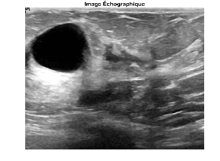
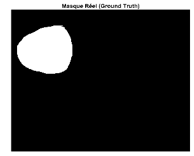
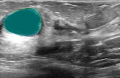
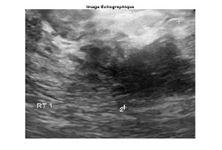
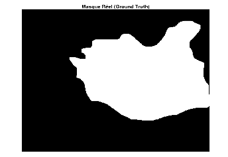
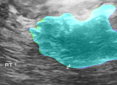

Aboubakr Belkaïd University – Tlemcen –
Faculty of TECHNOLOGY | MASTER | Biomedical Engineering - Specialty: Medical Imaging
Exploitation of Breast Ultrasound Image Segmentation in Breast Cancer Diagnosis
Presented by:
Abdelmoghith houari | Sohaib kartali | Fethallah Hadj bouziane
Presentation Outline
➊ Introduction
➍ Methodology and Model
➋ Problem Statement
➎ Results and Discussion
➌ Work Objectives
➏ Conclusion and Perspectives
Introduction
Breast Cancer
Breast cancer is the most common cancer in women, representing about 25% of all female cancers.
Each year, more than 2.3 million new cases are diagnosed worldwide, causing about 685,000 deaths.
Thanks to early detection and medical advances, the 5-year survival rate now exceeds 90% in developed countries.
Sung, H., Ferlay, J., Siegel, R. L., Laversanne, M., Soerjomataram, I., Jemal, A., & Bray, F. (2021). Global cancer statistics 2020: GLOBOCAN estimates of incidence and mortality worldwide for 36 cancers in 185 countries. CA: a cancer journal for clinicians, 71(3), 209-249.
Introduction
Diagnostic Methods
Ultrasound plays a key role in breast cancer diagnosis.
It allows for detection and characterization of lesions, differentiation between benign and malignant masses, guidance of biopsies, and assessment of treatment evolution.
It is a non-invasive, fast tool complementary to mammography.
Problem Statement and Work Objectives
Manual delineation of breast tumors is difficult and depends on the radiologist's expertise.
To improve diagnostic reliability, we compared classical segmentation methods — Region Growing, K-means and Active Contours — with the U-Net model, to develop an automatic and precise tool.
Methodology and Model
Dataset Description
- Breast ultrasound images were collected at Baheya Hospital in 2018 from 600 women aged 25 to 75.
- The final dataset includes 780 images (PNG, 500×500 pixels), distributed as:
- Benign: 437
- Malignant: 210
- Normal: 133
- Each image has a ground truth mask created in MATLAB.
- All data were processed respecting patient confidentiality.
Methodology and Model
Database Limitations
- Limited dataset size (780 images) → risk of overfitting.
- Manual segmentation → dependent on radiologist expertise and possible human error.
- Differences between devices and cropping → loss of information and lack of uniformity.
Methodology and Model
State of the Art: Why U-Net?
Limitations of Classical Methods
Tumor segmentation initially relied on classical methods like Region Growing, K-means and active contours, but these remain limited as they are sensitive to noise and highly dependent on chosen parameters.
The Advent of Deep Learning
Deep Learning, with CNN networks, allows automatic learning of image features and makes the model more precise. U-Net has become widely used in medical segmentation thanks to its U-shape and connections between layers.
Recent and High-Performance Architectures
Its recent versions like DBU-Net (2020), Improved U-Net (2024), HMA-Net (2025), and Attention U-Net (2025) make segmentation even more performant.
Methodology and Model
1. Data Preprocessing
- Resizing: All images and masks to 256×256 pixels for consistency.
- Normalization: Intensities scaled to [0, 1] by dividing by 255.
- Data augmentation: Rotation, flipping, zoom, brightness and contrast adjustment.
- Noise reduction: Filters applied to improve readability while preserving edges.
2. U-Net Training Parameters
- Split: 70% training, 15% validation, 15% test.
- Loss function: BCE + Dice Loss for class imbalance.
- Optimizer: Adam, initial learning rate = 0.001.
- Number of epochs: 50, batch size = 16.
- Environment: Python, TensorFlow/Keras, Kaggle Platform.
Results and Discussion
The U-Net model was evaluated on the test set with excellent performance:
Performance Metrics
| Metric | Score | % |
|---|---|---|
| Accuracy | 0.923470 | 92.35 |
| Precision | 0.835193 | 83.52 |
| Recall | 0.859654 | 85.97 |
| F1-Score | 0.892965 | 89.30 |
Results and Discussion
Results Analysis
- Excellent overall accuracy: 92.35% on the test set
- Good precision/recall balance: F1-Score of 89.30%
- Robust performance: Effective generalization despite limited dataset
- Ready for medical application: Very satisfactory metrics
Results and Discussion
Visual Examples of U-Net Segmentation
| Method | Type | Original Image | Original Mask | Predicted Mask (CNN) | Overlay |
|---|---|---|---|---|---|
| CNN (U-Net) | Benign Case |  |  |  | |
| Malignant Case |  |  |  |
Results and Discussion
Morphological Feature Extraction
Segmentation allows extraction of quantitative measurements to aid in diagnosis.
Features (Benign)
Features (Malignant)
Work Conclusion
This work enabled the development and evaluation of a U-Net model dedicated to breast tumor segmentation in ultrasound.
The set objectives were achieved, with results of Dice ≈ 0.98 and Jaccard ≈ 0.97, reflecting an excellent concordance between predicted masks and ground truth.
These performances demonstrate the model's effectiveness and its potential impact on medical diagnosis, by facilitating precise detection and delineation of lesions.
Developed Application
Main Interface
Main interface of the automatic segmentation application
Developed Application
Image Loading
Module for loading and preprocessing ultrasound images
Developed Application
Segmentation Results
Display of segmentation results with the U-Net model
Developed Application
Analysis and Metrics
Analysis module and performance metrics calculation
Limitations and Perspectives
Limitations
The model was only tested on a restricted and homogeneous database, which limits its generalization.
Perspectives
- Extend evaluation to a more varied dataset.
- Integrate automatic classification (benign/malignant).
- Explore advanced architectures (Attention U-Net).
- Adapt to other modalities (MRI, mammography).
Thank you for your attention
I am available to answer your questions.